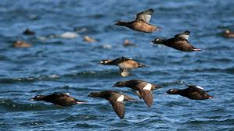
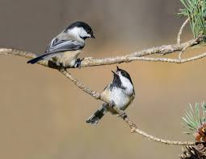

|  | VS |  | Scoter | Beats | Chickadee |
|---|
Both of these birds work very well with others. Chickadees almost act as a hive
single mind. If one hears a seed fall then they must all check and see! It is the reason
of thier ubiquitousness. Chances are that the random birds you may happen to glance at around
a tree or a bush and not think about it, are Chickadees. The original small bird fixture.
But if the Chickadees are a good team then the White Winged Scoter is a well oiled squad of
flying formations. It might not be as much for survivability as the Chickadee but they do
make for an amazing spectical when they tear through the air five feet above choppy seas. The theme to
Top Gun plays in your head.
For that reason, the Scoter Wins!